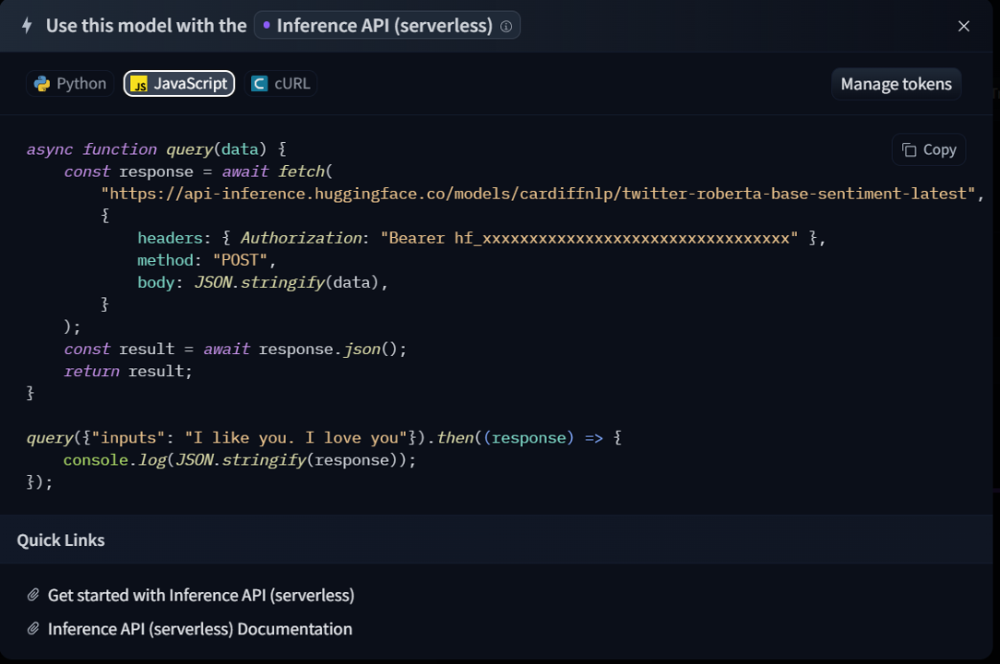

How to use Hugging Face models
Step 1: choose model
To start using any Hugging Face service you will need to register/log-in.
Don't worry it's free
In this window you can see all the models the site has to offer arranged by category and task.
Choose one of the models from the site.
Step 2: Inside the model card
After you have chosen a model, enter the model card, you will be able to see more details about the model, its code and its files.
To use it, click on the Deploy button and then on the Infernce API button (serverless)
Step 3: Deploy it with API
And you can receive the API request in Python Java Script or CURL, If you don't have a bearer token yet, you can click on the Manage tokens button and get one, fill in the token in the space provided and copy the code to your work environment.
